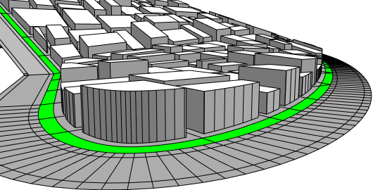

setback operation
Synopsis
setback(setbackDistance) { selector operator operations | selector operator operations ... }
setback(setbackDistance, uvSet) { selector operator operations | selector operator operations ... }
Parameters
- setbackDistance (float)
The setback distance. - uvSet (float)
The uv set to use for uv-based selectors. Default is 0. - selector (keyword)
Semantic selection keyword:- front, back, left, right, top, bottom, side: The edges' outwards normals in the polygon plane are analyzed by classifying their directions into the corresponding scope quadrants.
- object.front, object.back, object.left, object.right, object.top, object.bottom, object.side: The edges' outwards normals in the polygon plane are analyzed by classifying their directions into the corresponding object coordinate system quadrants.
- world.south, world.north, world.west, world.east, world.up, world.down, world.side: The edges' outwards normals in the polygon plane are analyzed by classifying their directions into the corresponding world coordinate system quadrants.
- street.front, street.back, street.left, street.right: Edges adjacent to a street can be selected with the street.front selector, rear edges can be selected with the street.back selector, and edges in between front and back can be selected with the street.left and street.right selectors. street.side combines left and right edges. These selectors depend on the availability of the streetWidth attribute map; see Auto-generated street width attributes. If the attribute is not available, component selection falls back to the object.xxx selectors.
- all: Selects all edges
-
remainder:
Selects the remainder of the polygon.
Note: the remainder depends on the selected edges but is always the same, independent of the position of the remainder selector in the selector-operator sequence!.
- index (float): Selects the index-th component (0-based). Too large and negative indices are modulo wrapped to a correct index.
- uv.left, uv.right, uv.bottom, uv.top: Selects edges based on their uv-coordinates. The outwards-pointing normal of each edge is analyzed to classify the edge with (left, right) beeing the negative and positive u-axis and (bottom, top) being the negative and positive v-axis.
- operator
The operator defines how the setback polygons are used to generate successor shapes. This also applies to shapes with more than one faces. Valid operators are:- : Each polygon is put into a new shape.
- = All polygons corresponding to the selector are combined into one new shape.
- operations
A sequence of CGA operations to execute.
The setback operation selects a number of edges and sets them back by a given distance. This is somewhat similar to the polygon offset operation , with the difference that only a subset of the edges are setback.
Related
Examples
Setback on Street Front
 |
LotInner --> Lot
Lot --> setback(5) { street.front : Garten |
remainder : Building }
Garten --> color("#00ff00")
Building --> offset(-3, inside)
extrude(world.up, rand(5, 15))
|
Copyright ©2008-2018 Esri R&D Center Zurich. All rights reserved.